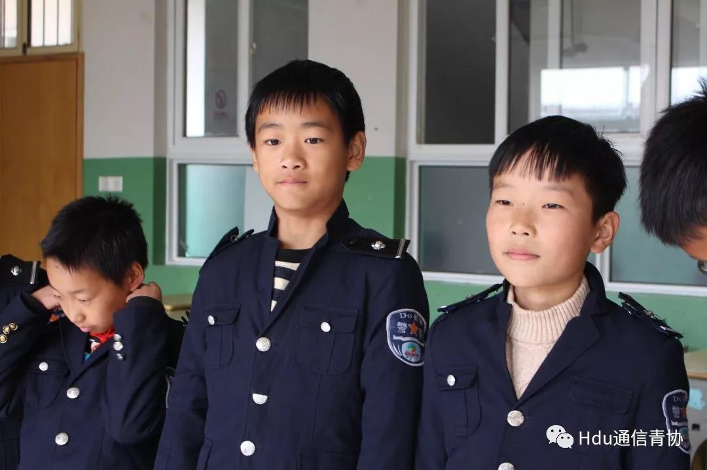

- 


<
>
有一种生活，没有经历过就不知道其中的艰辛；有一种艰辛，没有体会过就不知道其中的快乐；有一种快乐，没有拥有过就不知道其中的纯粹。不知不觉，时光如白驹过隙，这段支教的日子，到此就告一段落了。来到新疆的这些日子里，所有的纠结和不安、理想与抱负，都在生活的大熔炉里淬炼，让我不断成长。
来到巴仁乡八一爱民学校之前，我未曾想到过，我真正地走上人生中的第一个讲台的样子。在这里的四个月不仅教会了同学们一些国语知识，我也在教他们的同时提高了自己的知识和能力，正如有句古语所言：“学，然后知不足，教，然后知困，知不足然后能自反也，知困，然后能自强也，故曰教学相长也。”
我希望这些孩子们能够早早的明白为什么要用功学习，也希望他们能明白，年少时多受些读书的苦，将来才能少受些生活的苦，而不是在处于被生活所迫的困境时再后悔曾经浪费的光阴。
我深刻感受到此次新疆之行，真的是一次意义非凡的修行。没有支教，我不会知道炒菜加多少盐，烧饭放多少水，不会知道老师是怎么看待学生，也不会知道人与人之间的相处需要怎样的互相理解与支持，更不会深刻的领悟到集体意识的重要性。回首望去，我们和孩子们其实是一个相互学习相互成长的关系，但我想，或许我还没能真正成为一个合格的老师。这是我二十年来做的最有意义的一件事也是最正确最勇敢的一个决定，这一百多天将永远在我的生命中熠熠生辉！
支教并不只是支教本身，更是责任的表现，也是政策落实的有力表现。都说教育孩子是牵着蜗牛散步，让他慢慢长大。想让他们像蝴蝶一样飞，就要耐心等待破茧。
人生总要有许多体验，有时需要走出平常习惯的生活去看看另一个世界。支教的这段时光让我看到了不一样的世界。正如那句话所说：“让人成长的，不是岁月，而是经历！”
九月欣然来，一月载誉归。只有真真正正的体验过支教才知道支教究竟是怎样的一个概念，这其中的意义究竟有多大。巴仁乡八一爱民学校是我成长的第一个站牌，也希望我能在将来的道路上不断奋斗不断前进，越走越远。
我很感谢我的孩子们，永远带给我最灿烂的笑脸，让我相信世间的纯真；也很感谢援疆支教的历练，让我得以更精彩的成长。
愿此去前程似锦，再相逢依然如故。